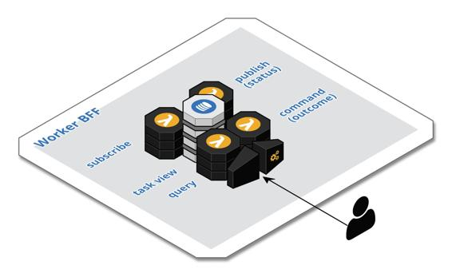

Example – Worker BFF
As an aggregate domain entity moves through its life cycle, users with different roles and skillsets will need to perform work in relation to an entity as part of a larger business process. This work often involves the use of a specialized user experience and work often dictates a specific device form factor: phone, tablet, or desktop. These are usually standalone, task-oriented applications. Examples include fieldwork, such as truck roll and sales calls; warehouse tasks, such as order fulfillment; or team activities, such as reviewing and contributing to content.
As depicted in the following figure, a Worker BFF component consists of all three APIs in the Trilateral API pattern. A Worker BFF has an asynchronous API to consume events related to task assignments, a synchronous API with queries and commands to interact with tasks, and an asynchronous API to publish events regarding the status of work. The CQRS pattern is employed to create the task view, the API Gateway pattern is leveraged for the synchronous interface, and the Database-First Event Sourcing pattern variant is utilized to publish status events.

A task is typically stored as a JSON document in a cloud-native document store, such as AWS DynamoDB, and contains all the necessary information needed to direct the work. The necessary information should be available in the event which triggered the creation of the task. The Worker BFF is related to the Event Orchestration pattern, which is covered in Chapter 5, Control Patterns. One or more specific Worker BFF components are often associated with a specific business process component. The business process component produces the events which trigger the Worker BFF components and consume the status events of the Worker BFF to further direct the business process. Once a business process is complete, the tasks can be purged from the task views after a time to live. All the events related to the tasks should be archived with the aggregate domain entity instances.